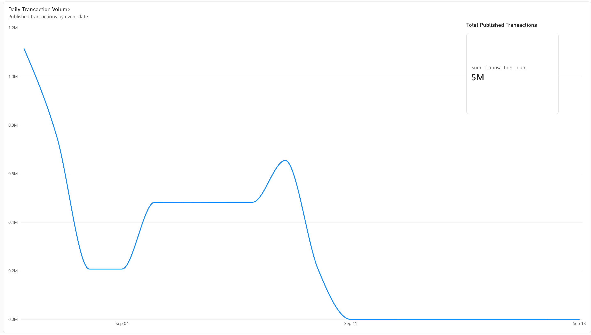
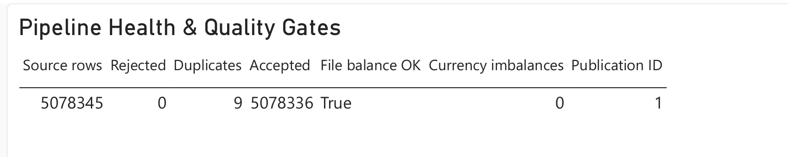
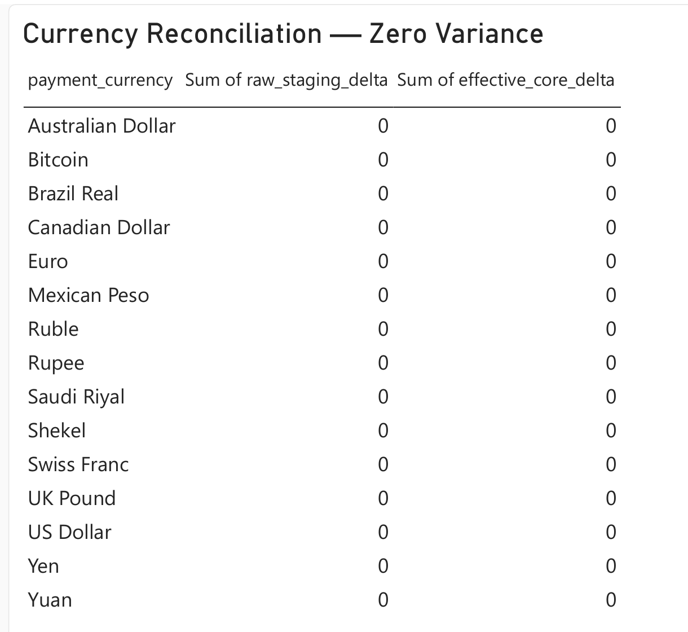
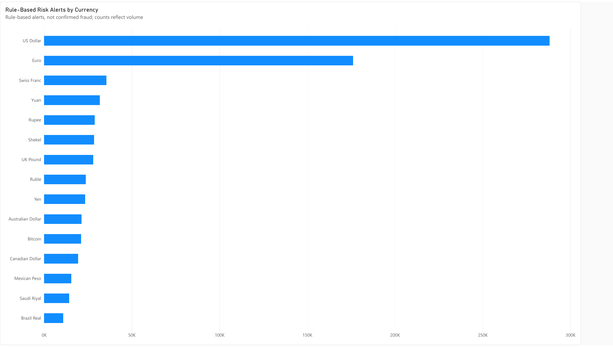

DATA ENGINEERING · BANKING
Reliable banking data.
From source to insight.
Banking Transaction Data Platform
I built a pipeline that turns millions of synthetic banking transactions into checked, organized data and clear reports.
THE IDEA
Make the data trustworthy
before it reaches a report.
Banking reports depend on accurate, traceable data. This project preserves the original records, checks incoming files, handles duplicate candidates, and confirms that transaction counts and amounts match before publishing the results.
HOW IT WORKS
One clear path from file to report.
- 01
Collect & check
Load source files, preserve the original records, and flag invalid rows or duplicate candidates.
- 02
Organize & reconcile
Build structured banking tables and check transaction counts and amounts within each currency.
- 03
Publish & explore
Release the checked data for reporting and present activity, quality, and review alerts in Power BI.
SEE THE RESULT
A simple view of the pipeline.
Tap a screenshot to view it larger.

Transaction activity
Daily volumes show how the published transactions are distributed across the reporting period.

Checks passed before publication
The full run published 5,078,336 accepted rows, retained 9 duplicate candidates, and recorded zero invalid rejects or currency imbalances.
Explore two more report views

Currency reconciliation
Amounts match across the pipeline, with zero variance for every currency.

Risk monitoring
Transparent rules highlight transactions for review. These alerts are not confirmed fraud.
Built with IBM’s synthetic AML data. The Power BI report displays an exported snapshot of the verified data.
WHAT THIS PROJECT DEMONSTRATES
Engineering with reliability in mind.
Data engineering
Python ingestion and PostgreSQL modeling at a scale of more than five million records.
Quality & traceability
Safe reruns, preserved source records, explicit corrections, and checks before publication.
Automation & reporting
Dagster workflow orchestration, independent dbt checks, and Power BI reporting.